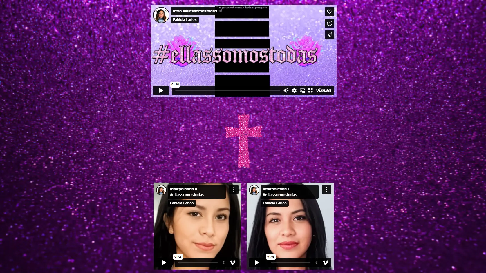

"Creación en movimiento" FONCA
Complejo Centro Cultural los Pinos
Machine Learning, AI, Net-Art Website, Screen, Tablets, Video, LEDs
Mexico City, Mexico, 2022
"#ellassomostodas" is a net art project that uses machine learning to reimagine and honor the voices of women impacted by femicide. Through a deep engagement with testimonial texts, AI generates new visual and narrative interpretations, bridging digital art with urgent social realities.
The project underscores the importance of collective memory and digital activism, transforming painful histories into spaces of visibility and remembrance.